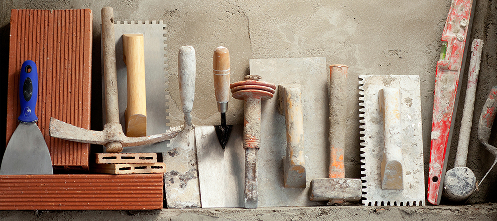
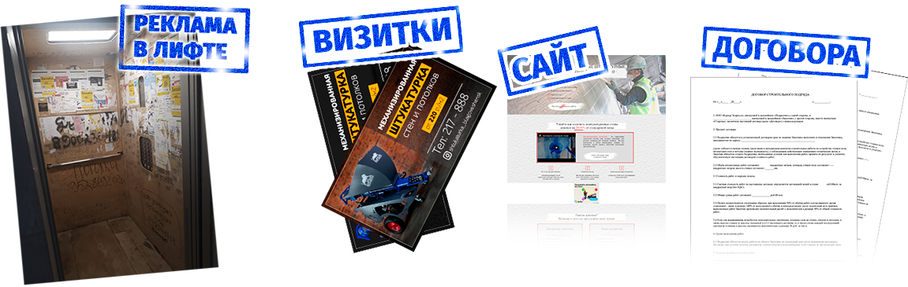
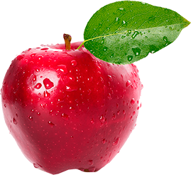

Перейдём уже к делу?
Начнём статью с Вашего заработка, из чего он будет складываться,
сколько платить людям и как вообще всё это устроено.
В среднем, услуга по механизированной штукатурке стоит от 250 руб. за
м2, в некоторых регионах России достигает цены в 700 руб. за м2,
например, на Сахалине.
Предлагаю считать всё по минимуму, т.е. будем считать Ваш доход из
минимально возможного
возьмём за
основу цену в 250 руб. за м2. Цена актуальна на 2021 год.
- И так:
-
Цена работы для клиента - 250 руб. м2, оплата штукатурам
составляет от 140 до 170 руб. за м2.
-
Есть и те, которые ломят цены, но мы же отталкиваемся от реального
большинства на рынке.
-
Получается, что Ваши чистые деньги это 250 – 150 руб., т.е.
Ваш доход = 100 руб. с м2.
-
Бригада, как правило, состоит из 3 людей, оплату 150 руб. м2 – это
зарплата на бригаду из 3 людей.
Что касается объектов, минимальный по площади дом около 70м2, а
квартира от 50м2, но по стенам, получается больше, так, например, в
среднем дом по полу 70м2, получается по стенам около 150м2, такой дом
бригада из 3 людей заштукатурит за 3 дня максимум, т.е. в 1 день
выставят маяки, во второй заштукатурят и начнут обработку стен до
финального результата.
Получается, что Ваш личный доход за эти 3 дня составит
150м2 * 100 руб. около 15 000 руб.
Если Вы в таком темпе будете работать месяц, то получится сделать на
«расслабоне» около 8 объектов,
Ваш доход составит минимум 120 000 руб.
Но с маленькими объектами хлопот больше, чем с большими.
Теперь давайте возьмём не минимум, а то, что реально получается в
жизни.
-
В жизни объекты по стенам составляют около 300 – 350 м2, бригада
из 3 людей в день делает около 120м2,
-
получается, что дом в 350м2 сдадут за 4 дня и Ваш доход составит
уже 35 000 руб. за 4 дня.
-
При 25 рабочих дня получится оштукатурить около 6 таких объектов и
Ваш доход составит около 210 000 руб.
-
Да стоит участь что у Вас будут и дополнительные расходы, на
рекламу и амортизацию оборудования,
- заложим сюда ещё около 15 000 руб.
Получается, что
заработаете Вы 195 000 – 200 000 руб.
Поговорим о вложениях и инвестициях
Бизнес на механизированной штукатурке имеет довольно лёгкий вход,
короткие сроки окупаемости и простую и понятную модель ведения данного
вида бизнеса.
Вашими основными вложениями будут:
1. Инструменты и оборудование.
Приобретение штукатурной станции. Стоимость станции зависит от
поставленных задач и варьируется от 200 тысяч рублей до 700 тысяч
рублей. В данной статье рассмотрим этот пункт подробнее. Покупка
качественного лазерного уровня. Данный инструмент необходим для
точного выставления маяков для идеально ровных стен. Стоимость
лазерного уровня до 35 000 рублей.
Помимо основного оборудования, необходим вспомогательный инструмент.
Полный рабочий комплект можно приобрести примерно за 40 – 50 тысяч
рублей. За эту сумму Вы получите лазерный уровень, стремянку, бочку
для воды и многое другое. С подробным перечнем необходимого
инструмента можно ознакомиться у поставщиков штукатурных станций.
Например, компания Mix Plaster охотно делится необходимой информацией
со своими клиентами.
В итоге инвестиции на приобретение необходимого оборудования и
инструмента составят от 280 тысяч рублей до 600 тысяч рублей.
Как показывает практика, достаточно 400 тысяч рублей.

2. Маркетинг и реклама.
Для старта в бизнесе на механизированной штукатурке стен необходимо
создать сайт, разместить объявления в новых многоквартирных домах
района Вашего города, в ДНТ и СНТ, а также коттеджных посёлках. Для
рекламы в жилых кварталах достаточно разместить объявления на въезде в
коттеджный посёлок, а в новостройках - в лифтах разместить листовки об
указании услуг, либо проставить рекламные печати на деревянном каркасе
в лифте. Лифт в новых домах обшивается ОСБ, который впоследствии будет
демонтирован, это делают для того, чтобы не было внешних дефектов
из-за ввозимых стройматериалов, в таком случае Вы можете в лифте
разместить не одну рекламу.
Обязательно необходимо разместить объявления на сайте Авито. Спрос на
поиск специалистов на данной площадке не теряет актуальности. Расходы
составят примерно 300 рублей в неделю. Итого, в среднем, чек за
размещение составит до 2 тысяч рублей.
Стоимость создания сайта составит около 15 тысяч рублей – 25 тысяч
рублей.
Создание и печать листовок — около 2 тысяч рублей за 1000 штук.
Изготовление рекламной печати — около 1000 рублей.
Печать баннера для размещения на въездах в коттеджные комплексы —
около 700 рублей за баннер.
Настройка и запуск контекстной рекламы — около 15 тысяч рублей за
настройку.
Итого расходы на рекламу составят примерно 40 тысяч рублей.

Но есть отличный способ сэкономить около 30 тысяч рублей
на изготовлении сайта и настройке контекстной рекламы.
Помочь с этим могут поставщики штукатурных станций, например, компания
Mix Plaster дарит клиентам уже готовый сайт и настроенную рекламную
кампанию. Бонусом для заказчика выполняются готовые макеты для
баннеров, а также макеты листовок. Вам остаётся получить и подключить.
Специалисты компании Mix Plaster сориентируют, где и каким образом
искать клиентов.
Благодаря выгодному предложению, Вы сэкономите около 30 тысяч рублей и
главное – сэкономите время и избавитесь от лишних хлопот.
Таким образом, общие вложения составят около 450 тысяч рублей.
С готовой рекламой от Mix Plaster Ваши расходы составят около 400
тысяч рублей – 410 тысяч рублей.
Как показывает практика, достаточно вложить - инвестировать 400 тысяч
рублей.
Окупаемость вложений - инвестиций.
Окупаемость 2 – 4 месяца:

С окупаемостью всё крайне просто.
Так как мы уже посчитали Ваши доходы, то можно понять, что Ваши
вложения окупятся всего за 2–4 месяца, в зависимости от количества
оштукатуренных квадратных метров. Кстати, если Вы возьмёте большую
стройку, многоэтажный дом к примеру, то там цены будут от 220 руб.
за м2, штукатурам оплатите около 130 руб. за м2, но объём,
многоэтажки минимум составляет около 8000 м2, т.е. в данном случае
при доходе даже в 80 руб. с м2, Вы заработаете 640 000 руб.